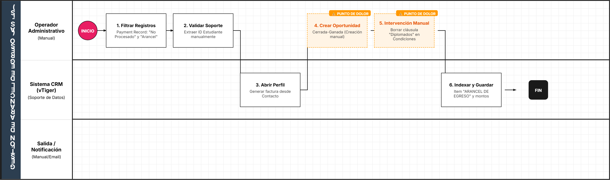
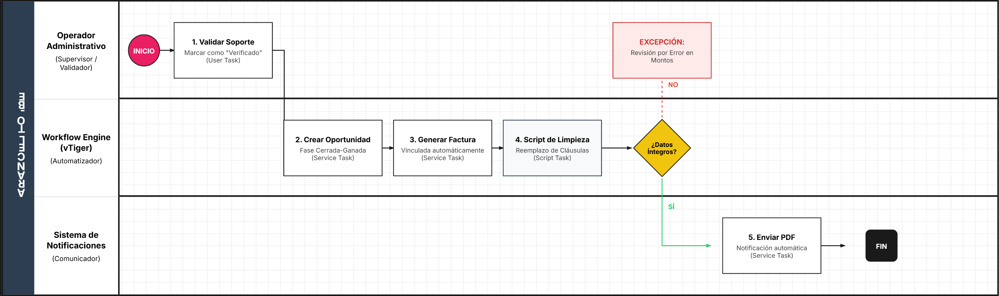

2.AS-IS (ARANCEL) TO-BE
Entregable 1: Análisis del Proceso Actual (AS-IS)
1. Identificación y Alcance del Proceso
Esta sección establece el contexto técnico y los límites del proceso de facturación administrativa.
Campo | Contenido |
|---|---|
Nombre del Proceso | Gestión y Creación de Facturas por Aranceles de Egreso |
Objetivo del Proceso | Registrar legal y financieramente el pago de aranceles administrativos realizados por alumnos egresados |
Punto de Inicio | Identificación de pago con estatus "No Procesado" en el módulo Payment Record |
Punto de Fin | Factura guardada con el ítem "ARANCEL DE EGRESO" y montos conciliados |
Documento Fuente | MANUAL 2: Gestión y Creación de Facturas por Aranceles de Egreso |
2. Actores Involucrados (Pools y Lanes)
Identificación de los roles que ejecutan el flujo dentro del ecosistema CRM.
Actor (Lane) | Rol en el Proceso | Responsabilidades Clave |
|---|---|---|
Operador Administrativo | Ejecutor | Validación de comprobantes, carga de datos financieros y edición de cláusulas legales |
Sistema CRM (vTiger) | Soporte / Datos | Gestión de bases de datos de contactos, productos y módulos de facturación |
3. Detalle de Actividades y Flujo AS-IS (Secuencia Lógica)
Desglose cronológico de la operación técnica.
No. | Actor (Lane) | Tarea / Actividad (Task) | Documentos / Sistemas Involucrados |
|---|---|---|---|
1 | Operador | Filtrar registros por "No Procesado" y "Arancel" | Módulo Payment Record |
2 | Operador | Validar soporte de pago y extraer ID del estudiante | CRM / Comprobante adjunto |
3 | Operador | Abrir perfil de contacto y generar nueva factura | Módulo Contactos / Facturas |
4 | Operador | Crear Oportunidad vinculada (Fase: Cerrada-Ganada) | Módulo Oportunidades |
5 | Operador | Cargar datos financieros y referencia de pago | Formulario de Factura |
6 | Operador | Intervención Manual: Borrar línea de condiciones de diplomados | Campo "Condiciones Generales" |
7 | Operador | Indexar ítem "ARANCEL DE EGRESO" y guardar | Detalles Elemento |
4. Reglas de Negocio y Puertas de Enlace (Gateways)
Puerta de Enlace: ¿El trámite es exclusivamente un Arancel?
- 🟢 Camino "SÍ" (Continuidad): Se eliminan las cláusulas de "Costo unitario de Diplomado" para evitar errores legales en la factura de egreso.
- 🔴 Camino "NO" (Excepción): Si es una inscripción, se mantienen las condiciones estándar y el proceso sigue el flujo de "Manual 1" (no detallado aquí).
5. Identificación de Puntos de Dolor (Análisis de Consultoría)
- Riesgo de Compliance: La eliminación manual de texto en las "Condiciones Generales" es propensa al error humano, lo que podría generar facturas con términos legales incorrectos.
- Carga Operativa: La necesidad de crear manualmente una oportunidad con el mismo nombre del asunto de la factura indica una falta de automatización en el flujo de trabajo (Workflow) del CRM.
- Fragmentación de la Interfaz: El operador debe trabajar en múltiples pestañas (Payment Record vs. Contactos) para completar un solo registro.

Entregable 2: Diseño del Proceso Optimizado (TO-BE)
1. Identificación y Alcance del Proceso (TO-BE)
Esta sección define la visión mejorada de la gestión de cobros por aranceles.
Campo | Contenido |
|---|---|
Nombre del Proceso | Automatización de Facturación de Aranceles de Egreso (vTiger-Workflow) |
Objetivo del Proceso | Eliminar la intervención manual en la edición de cláusulas y creación de oportunidades, garantizando integridad legal y financiera. |
Punto de Inicio | Cambio de estatus a "Pagado" (u otro disparador automático) en el registro de pago. |
Punto de Fin | Factura emitida, Oportunidad creada y notificaciones enviadas sin intervención humana. |
Documento Fuente | Análisis AS-IS y Requerimientos de Integración CRM. |
2. Actores Involucrados (Lanes)
En este modelo, el Sistema CRM asume la carga operativa principal.
Actor (Lane) | Rol en el Proceso | Responsabilidades Clave |
|---|---|---|
Operador Administrativo | Supervisor / Validador | Validar el soporte de pago inicial y supervisar excepciones. |
Workflow Engine (vTiger) | Automatizador | Ejecutar lógica de negocio, crear registros vinculados y limpiar campos de texto. |
Sistema de Notificaciones | Comunicador | Informar al estudiante y al área contable sobre la emisión exitosa. |
3. Detalle de Actividades y Flujo TO-BE
Se sustituyen las tareas manuales de edición y creación de registros por tareas de servicio (Service Tasks).
No. | Actor (Lane) | Tarea / Actividad (Task) | Tipo de Tarea (BPMN) |
|---|---|---|---|
1 | Operador | Validar soporte y marcar pago como "Verificado" | User Task |
2 | Sistema CRM | Disparar Workflow de creación de Oportunidad (Cerrada-Ganada) | Service Task |
3 | Sistema CRM | Generar Factura vinculada al Contacto automáticamente | Service Task |
4 | Sistema CRM | Script de Limpieza: Reemplazar "Condiciones Generales" por cláusula de Egreso | Script Task |
5 | Sistema CRM | Validar integridad de montos y referencia de pago | Gateway Logic |
6 | Sistema CRM | Enviar PDF de factura por correo electrónico al estudiante | Service Task |
